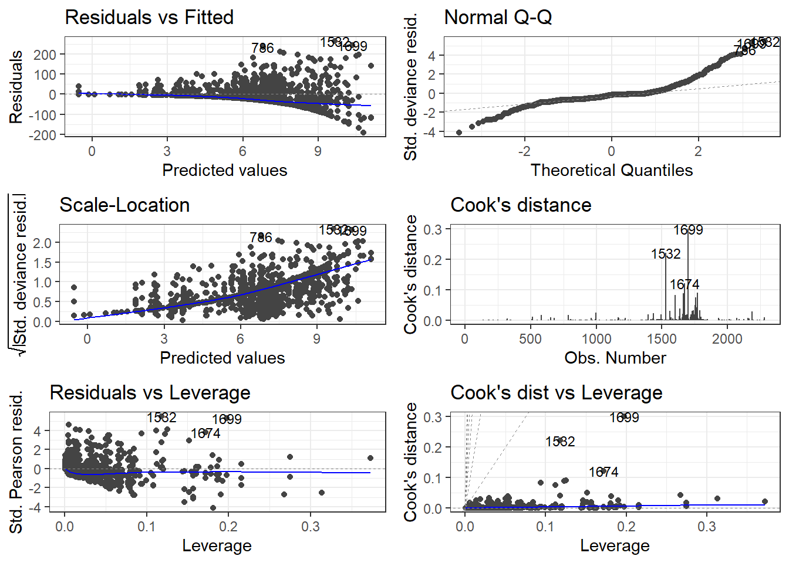

#in this dataset, net length and soak time are indicated as ordered factors, so make sure they are treated like that. Also, Year must be a factorstockC$Year<-as.factor(stockC$Year)stockC$Soak_time_Or<-as.ordered(stockC$Soak_time_Or)stockC$Net_length_Or<-as.ordered(stockC$Net_length_Or)stockC$season <-as.factor(stockC$season)#which seasons do we haveunique(stockC$season)
[1] spring summer fall
Levels: fall spring summer
#balance among seasons table(stockC$season)
fall spring summer
351 833 1112
#how many locationsunique(stockC$Location)
[1] "Middle" "Upstream" "Downstream" NA
#balance among locationstable(stockC$Location)
Downstream Middle Upstream
26 1233 1034
#gillnet categories and balance unique(stockC$Gillnet_category)
[1] "capron" "nylon" "other"
table(stockC$Gillnet_category)
capron nylon other
1079 1210 7
#probably we should remove category "other" in gillnetsstockC<-stockC %>%filter (Gillnet_category!="other")
###Build models Start GLM, with distribution family tweedie, which allows many zeros in the distribution.
#build model with all factors modC1<-glm(Catch_g~Year + season + Location + Gillnet_category + Net.mesh.gr + Net_length_Or +Soak_time_Or, family=tweedie(var.power=1.1, link.power=0), data=stockC)summary(modC1)
modEvA::Dsquared(modC1) *100# % of explained deviance
[1] 58.72344
#Soak time is not signif, so try without it and then compare the models modC2<-glm(Catch_g~Year + season + Location + Gillnet_category + Net.mesh.gr + Net_length_Or, family=tweedie(var.power=1.1, link.power=0), data=stockC)summary(modC2)
modEvA::Dsquared(modC2) *100# % of explained deviance
[1] 58.65733
AICtweedie(modC2)-AICtweedie(modC1)
[1] 5.884925
#AIC is the lower for modC1 so consider it the best model
#Extract coefficients and plot standardised CPUE
##extract coefficients. We can use a little function scaleCE that will scale the cpue against the first Year tt <-summary(modC1)$coefficients # combine these with empty first Yeartt2 <-rbind(c(0,0,0,0), tt[grep("Year",rownames(tt)),])tt3 <-cbind(tt2, exp(tt2[,"Estimate"]), scaleCE(exp(tt2[,"Estimate"])))yrs<-c(1991:2021)cpue_stand <-cbind(tt3, yrs)colnames(cpue_stand) <-c( "Estimate", "StdError", "t value" ,"Pr(>|t|)" , "Exp_estimate" ,"Scaled_estimate", "Year")rm(tt, tt2, tt3)cpue_stand <-as.data.frame(cpue_stand)#Plot - need to start the Year before the dataset as it uses that to scale toplot(cpue_stand$Year, cpue_stand$Scaled_estimate, ylab="Standardised CPUE", main="Stock C", xlab="Year",pch=19)
#Check residuals and outliers, try again without them if needed#model diagnosticsautoplot(modC1, which =1:6, label.size =3)+theme_bw()

#outliers- quantitative detection#leverage distancei_n =influence(modC1)$hat # calculate the influence of data pointswhich.max(i_n) #shows which data point has the highest influence on the fitted model
1658
1658
stockC[1658,]
Fishing_id Location Year season Gillnet_category Net.mesh.gr Net_length_Or
1658 208 Upstream 1998 spring nylon big 3
Soak_time_Or Catch_g
1658 2 21072
#Cook’s distance.c_d =cooks.distance(modC1)which.max(c_d) ##shows which data point has the highest influence on the fitted model
1699
1699
stockC[1699,]
Fishing_id Location Year season Gillnet_category Net.mesh.gr Net_length_Or
1699 244 Upstream 1996 fall nylon big 4
Soak_time_Or Catch_g
1699 3 130933
#stockC[1532,]stockC<-stockC[-1699,] #remove outlier from the dataset, and check how results have changed